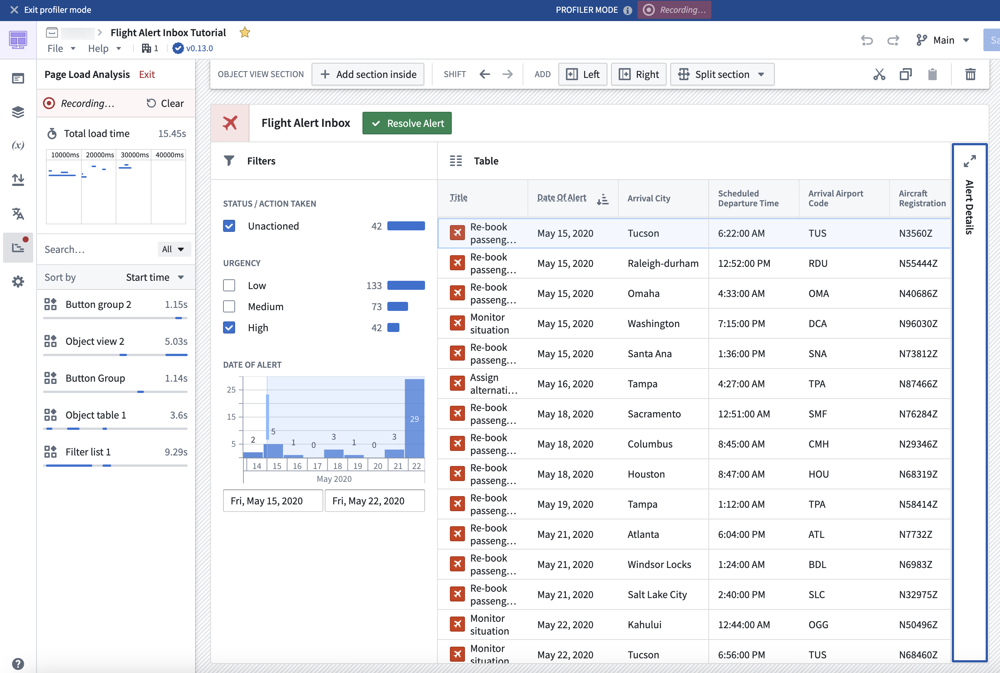

Workshopâs Performance Profiler gives builders the ability to capture and view the performance of their applications, providing a tool to diagnose where high load times may be occurring and identify where optimizations can be made to improve the overall performance of applications.

To use Performance Profiler, enter Edit mode, open the Profiler tab, and select Reload in Profiler Mode to enter Profiler mode. Entering Profiler mode will refresh the moduleâs web browser page to allow the profiler to record network requests, starting from the moduleâs initialization. A banner will be displayed at the top of the page, letting builders know that they are currently in Profiler mode and that load events are actively being recorded.
The profiler will display:
Only widgets and variables that affect the on-screen display are calculated, meaning that not all widgets and variables may be immediately shown in Profiler mode. This mirrors the behavior and performance that users experience in View mode, allowing for more accurate performance profiling.
You can interact with a module in Profiler mode in several ways, such as by triggering new layout views to prompt loading of new widgets and variables, or triggering widget reloads or variable recalculations by running Actions, Functions, or events. The profiler will capture new widget and variable load and reload events, allowing you to view their load times.
You can also filter widget and variable loads based on the page or overlay that triggered them, search for captured load events by widget or variable name, and clear all captured load events in the profiler. To exit Profiler mode select Exit at the top of the Profiler panel or in the Profiler mode banner. Exiting Profiler mode will refresh the moduleâs web browser page.